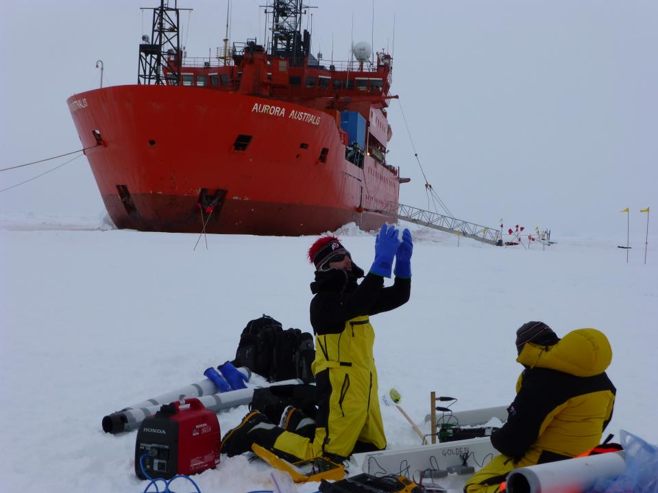

Christian Sampson |
I am a Project Scientist at the Joint Center for Satellite Data Assimilation (JCSDA) housed at UCAR/NCAR. I am primarly working on developments for the Joint Effort for Data Assimilation Integration (JEDI) system which is a generic DA system that will be operational at NASA, NOAA, USAF, The Navy and the UK Met Office. I have a general interest in applied mathematics aimed at problems in climate, weather, and data assimilation and analysis. I see the JEDI project as a vehicle to accelerate research to operations/application benefiting fundemental research and the scientific community as a whole. Before the Joint Center, I was at the University of North Carolina Chapel Hill in the mathematics department working on climate and data assimilation. I recieved my Phd in mathematics from the University of Utah in 2017 where I studied problems involving sea ice and climate in both a theoretical and empirical capacity. |
ResearchAbout My Research |
TeachingClass Resources |
PublicationsA List of Publications |
C.V.My Curriculum Vitae |
AIM MCRN Research CommunityMCRN Research Community |